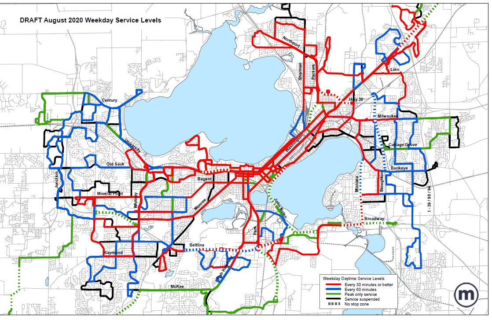

When Improvement Means Back to 85% of Normal
Susan De Vos and Yvonne Schwinge | September 5, 2020

Beginning August 23, 2020 Madison Metro Transit resumed a roughly 85% level of regular service (revenue hours), a huge improvement over to its much leaner "essential" routing that began near the end of March. At that time, Madisonians got to see how essential it is to have a public transit system that continues to operate, even during a pandemic, and even in a much-reduced form. While ridership may have fallen to less than a tenth of what it had been in the span of only a few days, that one-tenth were essential travelers who enabled the rest of us to stay Safer at Home. Buses were run on a modified Saturday schedule with a maximum of 15 passengers. They were disinfected thoroughly at least once a day and everyone was strongly encouraged to wear masks. Passengers who could, were required to enter through the back door. No fare was collected. The strict Safer at Home order was followed by a plan to gradually and cautiously re-open various enterprises starting at the end of May called Forward Dane. Bus capacity has been increased from 15 to 20 passengers and trips are no longer limited to 'essential' ones. Metro's Administration Office is back open for limited hours. Beginning September 1, 2020 Metro reverted back to front door boarding and fare collection. The sudden restrictions, gradual loosening, and now resumption back to 85% of regular service could not occur with even the modicum of order of 2019, a modicum that seemed disruptive enough. In March of 2019, Metro planners released a packet of proposed route, schedule and bus stop changes that would take effect that fall. Some changes were modest; others radical. Metro received plenty of feedback regarding the proposed changes. Armed with some of the feedback it had received by a week before the meeting and in tandem with the city of Madison's public oversight Transportation Commission, it held a Public Hearing on the proposed changes at the Commission's April 24, 2019 meeting. The 2019 Hearing was announced broadly, televised, live streamed and recorded (go to the double circles location). While some proposals seemed to meet little questioning, Commissioners explored others further. The Commission's final decision on many of the proposals occurred at its meeting about a month later (May 22, 2019). This year, Metro had to spend March trying to react as quickly as possible to the new reality of a pandemic, its own "essential role," worker and passenger safety, and the abrupt closure of most everything without the consistent leadership of federal, state and local leaders. It had to respond to the continual acquisition of new information about a highly contagious and sometimes fatal novel virus, the county’s Forward Dane plan and customer input. And while all this was going on, it had to try to design a reasonable plan to meet expected fall school and business re-openings. The result was that Metro brought a broad outline of what it could propose to a virtual meeting of the Transportation Commission on June 24, 2020. It claimed that "budget constraints and staffing limitations" induced it to propose a reduced 85% of regular service. Armed with that "Go Ahead," Metro then worked on a more concrete set of proposals to be approval by the Commission at its July 22, 2020 meeting. Despite holding sometimes serious reservations about factors such as the ability of the proposed cutbacks to meet demand, the Commission approved the proposals. Chances are, reservations about sufficient capacity will turn out justified. Metro is able to dispatch extra buses at places and times where the level of service is inadequate. But doing so may be a poor and inadequate reaction to problems that probably could have been anticipated and often prevented. How are people supposed to arrive to work, class or an appointment on time when their bus is too full to let them ride? Even if a backup bus is dispatched instantly to deal with overflow, they still may miss a transfer. They still may be late. Would you depend on an undependable operation if you could avoid it? What message about our bus system is being conveyed? Despite overall reductions, a major consideration when designing current plans was that they would "better serve low-income riders and people of color." The proposal packet proposal is replete with maps buttressing that claim. Still, reductions are reductions. While a few of the regular weekday routes were eliminated (such as 3, 14, 19, 34), often cleverly replaced by their more limited weekend counterparts, the largest hit was the elimination or modification of roughly half the 22 peak hour weekday routes. For reasons that cannot be discussed here, much of that often newer, dysfunctional routing occurs in areas on Madison’s periphery. Even when this pandemic is finally under control, Metro’s fuller routing and scheduling will probably look very different from before. Not only is the new 5-year Transit Development Plan designed by the Transportation Planning Board (Madison Area MPO) promising to re-examine past "coverage vs. frequency" routing decisions, but the city is also contracting for a 2-year "Metro Transit Network Design Study" with world-renown transit planner Jarrett Walker. Finally, what the true intention was of a Sustainable Madison Transportation Master Plan envisioned back in 2012 might finally happen. |